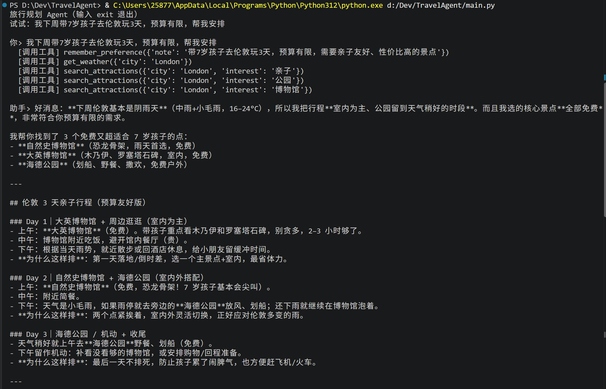
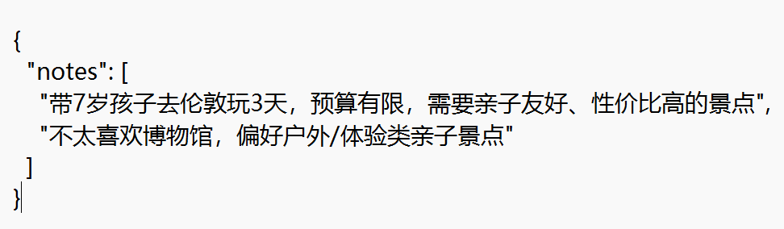

📄 存成 PDF: 按 Ctrl+P → 目标选"另存为 PDF" → 勾选"背景图形 / Background graphics"(保证配色和架构图完整)→ 保存。这条黄色提示不会出现在 PDF 里。
AI 产品作品集 · 旅行规划 Agent
周艳蓉 · fairy_sharon@163.com | 一个从 0 到 1 独立搭建的对话式旅行规划 Agent
用一句话说清需求，AI 结合实时天气、真实景点数据和攻略知识，给出一份懂你约束（带娃 / 预算）、能直接照做、并说得清"为什么这么排"的行程。完整演示了 工具调用 · RAG · 记忆 三大能力。
1. 它解决什么问题
洞察来源：我独自做欧洲多国自由行时深感规划之累——攻略、天气、景点、价格散在多个 App，还都是写给"所有人"的，没人告诉"你一个人、预算有限、只有三天"该怎么排；带娃的用户约束更多。
目标用户：带孩子自由行的家长（预算敏感、时间紧、怕排队怕孩子累）。
核心价值：把"用户自己搜索拼攻略"变成"AI 帮你边聊边出可执行行程"。
2. 系统架构
3. 三大能力
工具调用 Tool
模型主动决定调哪个工具、传什么参数；应用去执行。查实时天气(open-meteo)、查景点(pois.json)。可取实时、可执行动作。
RAG 检索
应用每轮自动从攻略库(guides/*.md)检索相关段落、注入提示词。补模型没有的私有/在地知识，可溯源。
记忆 Memory
用户偏好写入 profile.json，跨会话可读回。越用越懂用户，不用每次重说。
4. 真实运行

一句话需求 → 模型自主发起 5 次工具调用（记忆 + 天气 + 3 次景点检索）→ 结合"下周阴雨"改为室内为主、优先免费景点，输出带理由的分日行程。

跨会话记忆：用户偏好（含第二轮补充的"不太喜欢博物馆"）以 JSON 落盘到 profile.json，下次启动读回。
5. 技术与产品取舍
- 能力边界：变化极快的数据（价格、余量）走工具实时取，不进 RAG（会过期）；相对稳定的攻略知识走 RAG。判断"何时 RAG、何时工具"是这个产品的核心设计。
- 反幻觉：关键事实以工具 / RAG 数据为准，要求模型"无数据不臆造"。
- 指标：北极星＝规划完成率；辅以工具调用成功率、行程采纳率、7 日回访（AARRR）。
💡 一次真实的厂商抽象验证：开发期间原用的免费模型服务中途宣布退役（接口返回 410）。因为模型调用做了 OpenAI 兼容抽象，我切换到另一家只改了 3 行配置、代码一行未动，几分钟恢复——这让我深信 AI 产品要有厂商抽象与降级预案。
6. 里程碑 & 我的角色
M0 · MVP（已完成） P0 全部功能，单城市，命令行原型跑通 → M1 结构化行程 + 地图，3–5 城市，内测收集指标 → M2 接入预订闭环、用户画像、规模化。
我的角色：独立完成需求定义、架构设计（工具调用 + RAG + 记忆）、开发与验证，并撰写 PRD。技术栈：Python、OpenAI 兼容大模型接口、TF-IDF 检索、open-meteo API。